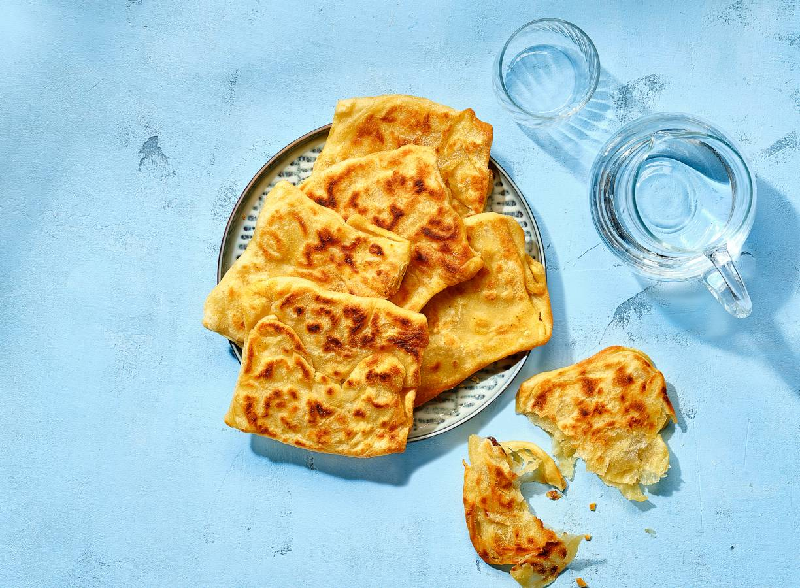

Dit platbrood uit de regio Maghreb lijkt op een pannenkoek, maar is net zoals bladerdeeg, uit laagjes opgebouwd. Serveer met honing en een kop muntthee.
1. Meng de bloem, 75 g griesmeel (per 6 stuks), het zout, de bakpoeder en het water en kneed in ca. 3 min. tot een soepel en redelijk plakkerig deeg. Het mag nog klonterig zijn, dus let erop om het deeg niet te overkneden. Dek af met vershoudfolie en laat ca. 1 uur op een tochtvrije en warme plek rusten.
2.Laat ondertussen de boter met de olie in een steelpannetje smelten en laat helemaal afkoelen. Spatel het deeg na 1 uur heel losjes door. Vet je handen in met wat van het botermengsel en maak van het deeg met ingevette handen 6 bolletjes (per 6 stuks). Smeer een met bakpapier beklede snijplank of bord in met een beetje van het botermengsel, verdeel de bolletjes erover en dek deze af met vershoudfolie. Laat nog ca. 30 min. rusten.
3.Vet het werkblad in met een deel van het botermengsel en rol met een plastic deegroller of duw met je vingertoppen elk bolletje uit tot een dunne lap van ca. 30 x 30 cm. Het deeg moet zo dun zijn dat je erdoorheen kunt kijken. Smeer in met nog een deel van het botermengsel en bestrooi er 5 g griesmeel over.
4.Vouw de lap vanuit de boven- en onderkant overlappend naar het midden toe op en vouw de lap vervolgens vanuit de zijkanten overlappend naar het midden toe, zodat je een vierkant pakketje krijgt. Druk met je vingertoppen aan zodat de lap ca. 12 x 12 cm. wordt. Vet in met een deel van het botermengsel en laat rusten onder vershoudfolie. Herhaal met de rest van de deegbollen.
5.Verwarm per msemmen een deel van het botermengsel in een koekenpan en bak de msemmen in ca. 5 min. op laag vuur gaar. Draai regelmatig om en zet de laatste min. het vuur wat hoger om de msemmen lichtbruin en knapperig te krijgen.
eet dit lekker met munt thee =D